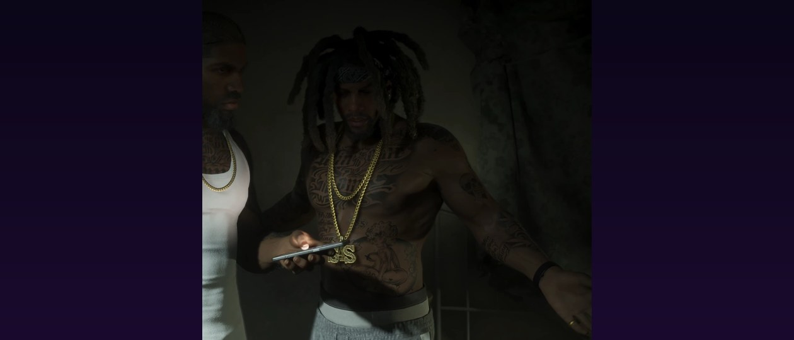

Nesto n'apparaît jamais à l'écran : on voit ici Raymond lui parler au téléphone. © Rockstar Games / Take-Two Interactive — capture de « GTA VI : An Extended Look », via GTA Wiki.
Ernesto « Nesto »
EN BREF
- Surnom : « Nesto »
- Rôle : associé de Raymond
- Apparence : inconnue — on ne fait que l'entendre au téléphone
- Première apparition : « Extended Look » du 27 août 2026
Ernesto, surnommé « Nesto » par Raymond, est un personnage secondaire de l'« Extended Look » du 27 août 2026. On ne le voit jamais : il n'existe que par sa voix, lors d'un appel téléphonique.
L'appel qui déclenche la fusillade
Au début de la vidéo, Raymond s'inquiète de sa disparition au moment où Jason et Lucia viennent chercher une livraison. Nesto l'appelle alors et lui conseille de laisser ses « amis de la task force » prendre ce qu'ils veulent : il a visiblement coopéré avec la police. Raymond, furieux, lui rappelle qu'il a toujours été là pour lui. Juste après, la police — dont un agent nommé Mendez — donne l'assaut à l'immeuble.
Ce qu'on ne sait pas encore
Son métier, son rôle exact dans le trafic de Raymond et la nature de ses liens avec la police restent inconnus. Rien n'indique pour l'instant s'il réapparaîtra dans le jeu final.